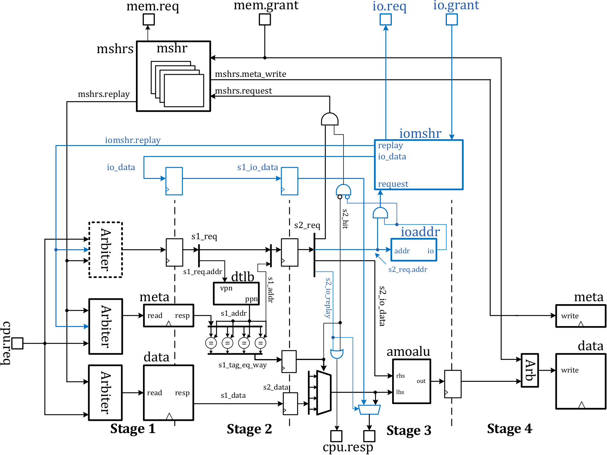

Memory mapped I/O (MMIO)
Note: this initial implementation of MMIO is subject to significant further optimizations.
Although peripherals are mapped into the memory space, they cannot be accessed in the same way as cacheable memory due to the consistency requirement of I/O operations and the possible side-effects of I/O read and write operations. To safely access the I/O space of peripherals, memory mapped I/O (MMIO) gives the core pipeline uncached access to I/O space (bypassing both L1 and L2) while enforcing I/O operations in the program order.
To bypass L1 and L2 for I/O operations, they must be identified from normal memory operations and processed separately in the L1 D$. The following figure shows the new L1 D$ with MMIO (probe and write-back units are removed to highlight the MMIO). The components in blue are used for MMIO.

The ioaddr is an address checker controlled by the global I/O space mapping
(see Memory and I/O maps, soft reset, and interrupts).
According to the I/O mapping, ioaddr identifies I/O requests in all D$
misses (ioaddr.io fires when s1_req.addr hits in I/O space). Since all I/O
operations are uncached, they all miss in D$ and are caught by ioaddr, which
then notifies the I/O miss handler (iomshr). iomshr processes the actual
I/O requests using the I/O bus shown in the high-level view of the untethered
Rocket chip. If it is a write operation, the D$
assumes it is served once the miss is accepted by iomshr. For a read
operation, iomshr initiates an I/O replay after fetching the requested data
from peripherals. Two buffer stages (io_data, s1_io_data) are added to
ensure that the I/O replay follows the exact timing of normal memory replay.
Consequently, the core pipeline gets the I/O value on the usual cpu.resp
port at “Stage 3” of the I/O replay. Since there is only one iomshr, all I/O
operations are processed in the program order.